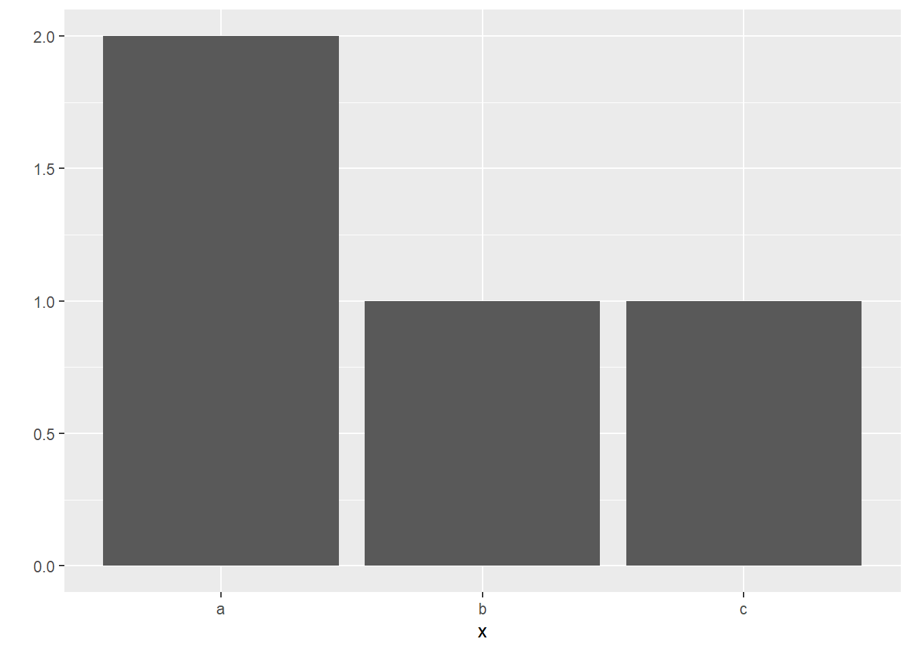

1 R 설치
1.1 R이란?
R은 오픈소스 프로그램으로 다양한 통계분석, 데이터 마이닝, 그래프 작성 등을 위한 프로그래밍 언어입니다. 기존의 통계분석용 프로그램 중 대표적인 것으로 SAS, SPSS 등이 있고, 보조적인 프로그램으로 Excel 등을 들 수 있습니다. 비용이나 다양성 등을 고려하였을 때 R이 가장 우수하다고 볼 수 있습니다. 현재 많은 대학들이 R을 기반으로 데이터 분석 및 통계분석 수업을 진행하고 있습니다.
R의 장점은 다음과 같습니다.
- R은 오픈소스로서 무료입니다.
- 프로그래밍 언어로서 사용자의 실력에 따라 매우 복잡한 분석도 쉽게 자동화하여 수행할 수 있습니다.
- 다양한 최신 통계분석 기법, 데이터 마이닝 기법, 그래프 작성 기법 등이 사용자들에 의해 제공됩니다.
- 전 세계적으로 사용자들이 다양한 예제를 공유합니다.(영문 예제 다수)
1.2 R 설치
- R을 다운받기 위해 웹브라우저로 www.r-project.org 에 접속합니다.(또는 구글에서 R로 검색)
- 화면에서 [download R]을 클릭합니다.
- 서버 목록 중 Korea를 찾으시고 그 중에서 하나를 클릭합니다.
- 윈도우 버전을 설치할 경우 [Download R for Windows]를 클릭합니다.
- [base]를 클릭합니다.
- [Download R 3.x.x for Windows]를 클릭하여 PC에 다운로드 받습니다.
- 다운받은 파일을 실행시켜 프로그램을 설치합니다. (계속 [다음]을 눌러 설치 진행)
- R 설치가 끝난 후 바탕화면에 생성된 아이콘을 더블 클릭하면 R이 실행됩니다.
- R이 시작되면 R Console이라는 창이 열리고, 그 창에 > 가 나타나는 데 R의 프롬프트입니다.
- “>” 기호 다음에 필요한 명령문을 입력하고 Enter 키를 치면 입력된 명령문이 실행됩니다.
- 명령문이 실행되면 그 실행결과가 바로 다음 줄에 출력됩니다.
1.3 R의 특징
- R은 명령어를 1줄씩 처리하고 그 결과를 바로 보여주는 인터프리터 언어입니다.
- R의 콘솔창에 > 기호(greater than sign, 부등호 기호)는 명령 프롬프트입니다. > 뒤에 원하는 명령어를 입력하고 Enter를 치면 명령어가 실행됩니다.
- R은 대소문자를 구별합니다. 명령어를 입력할 때 대소문자를 명확히 파악하고 입력하여야 합니다.
- R 콘솔창에서 키보드의 상향(↑)를 누르면 이전에 실행했던 명령어를 순서대로 다시 불러올 수 있습니다.
- #은 주석 기호(메모 유사)입니다. 즉 맨 앞에 #이 있으면 그 줄은 실행하지 않습니다.
- 명령어를 입력할 때 오타가 많이 나고, 긴 명령어를 입력하거나 명령어를 재사용할 때는 R 콘솔창이 불편합니다. 따라서 주로 R스튜디오의 스크립트 창에서 명령어를 입력하고 [Ctrl + Enter]를 눌러 콘솔 창에 보내 명령어를 실행합니다.
1.4 RStudio 설치
R스튜디오을 다운받기 위해 웹브라우저로 www.rstudio.com 에 접속합니다.
상단 메뉴 [Product] → [RStudio]를 클릭합니다.
[DOWNLOAD RSTUDIO DESKTOP]을 클릭한 후 [RStudio x.x.x - Windows Vista/7/8/10]를 클릭하여 PC에 다운로드 받습니다.
다운받은 파일을 실행시켜 프로그램을 설치합니다. 계속해서 [다음]을 눌러 설치를 진행하면 됩니다.
R스튜디오 아이콘이 바탕화면에 없으면 다음과 같이 하여 아이콘을 바탕하면 만듭니다. [시작] → [모든 프로그램] → [Rstudio] → [Rstudio]를 마우스 오른쪽 단추로 클릭한 후 [보내기] → [바탕화면에 바로가기 만들기]를 클릭하여 바탕화면에 R스튜디오 아이콘을 만듭니다.
바탕화면의 R스튜디오 아이콘을 더블클릭하여 실행시킵니다.
R스튜디오를 실행한 후 [File] → [New File] → [RScript]를 클릭하면 스크립트 창이 생성되면서, 총 4개의 창이 화면에 보입니다. 스크립트 창, 콘솔 창, 워크스페이스 창, 파일 등을 볼 수 있는 창입니다.
- 스크립트 창 : R 명령어를 입력하는 창입니다. 명령어에 커서를 두거나 명령어들을 선택하고 [Ctrl + Enter]를 누르면 콘솔 창에서 명령어가 실행됩니다. 스크립트 창의 장점은 명령어를 저장하고 불러올 수 있다는 점입니다.
- 콘솔 창 : 명령어가 실행되고 그 결과를 보여주는 창입니다. R의 콘솔 창과 거의 동일합니다.
- 워크스페이스 창 : 작업 중에 할당된 변수와 데이터를 보여주는 창입니다.
- 마지막 창은 파일, 그래프, 패키지, 도움말 등을 볼 수 있는 창입니다.
스크립트 창에서 32*79 라고 입력하고 [Ctrl + Enter]를 누르면 아래 콘솔 창에서 명령어가 실행되고, 그 결과 값인 2528이 출력되는 것을 볼 수 있습니다.
1.4.1 RStudio에서 프로젝트 만들기
RStudio에서 프로젝트를 만들면 하나의 폴더에서 코드와 데이터들을 체계적으로 관리할 수 있어 편리합니다. 새 프로젝트를 만드는 절차는 다음과 같습니다.
- (프로젝트 만들기) 메뉴 [File] → [New Project] 클릭 → [New Directory] → [New Project] → [Directory name]에 프로젝트이름 입력(예, rbasic) → 그 아래에 폴더 위치 지정(예, 바탕화면) → [Create Project] 클릭
- (스크립트 파일 만들기) 메뉴 [File] → [New File] → [R Script]클릭
- (스크립트에서 명령어 실행) 스크립트 창에서 32*27 을 입력하고 [Ctrl + Enter] 입력
- (스크립트 저장) 메뉴 [File] → [save] → rbasic1.R 로 저장
- 프로젝트 이름으로 만들어진 폴더에 스크립트 파일들이 저장됩니다. 이 폴더에 데이터를 넣어두면 R에서 데이터를 불러올 때 편리합니다. 일종의 작업 디렉터리입니다.
1.5 R package 설치 및 사용
R 패키지는 목적에 맞게 R 함수, 데이터 등을 모아 놓은 것입니다. 현재 수천 개의 패키지가 존재합니다. 이 중에서 유용하고 중요한 패키지들을 골라내어 사용법을 익히는 것이 필요합니다.
패키지는 기본적으로 CRAN에 등록되어 있는 것을 다운 받아 설치합니다. 패키지를 설치하고 사용하는 방법은 다음 절차를 따릅니다.
- 패키지 설치하기 install.packages(“패키지명”)
- 패키지 로드하기 library(패키지명)
- 함수 사용하기
library(ggplot2) # ggplot2 패키지 로드
x <- c("a", "a", "b", "c")
qplot(x) # ggplot2에 있는 함수 qplot 사용하기 (빈도 막대그래프 출력)
2개 이상의 패키지를 한번의 명령으로 설치할 수도 있습니다.
CRAN이 아닌 Github로 부터 패키지를 다운 받아 설치하고자 한다면 devtools 패키지가 먼저 설치되어 있어야 합니다.
RStudio에서는 패키지 창에서 Install 버튼을 눌러 패키지를 설치 할 수 있습니다.